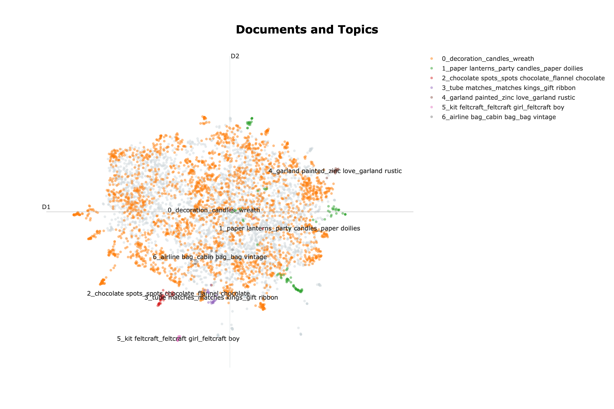
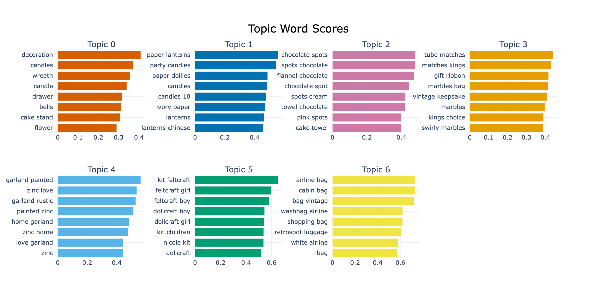

4.1 Kundensegmentierung
Über die deutsche Ausgabe
Diese Seite ist eine KI-Übersetzung der englischen Ausgabe von Marketing Science in Python. Die englische Ausgabe ist maßgeblich und hat bei Abweichungen Vorrang. Code, Notebooks und Text in Abbildungen bleiben auf Englisch. Englische Ausgabe lesen
Ein Segmentierungsprojekt sollte etwas hervorbringen, das Ihr Team tatsächlich nutzen kann, nicht nur eine Präsentation. Das eigentliche Ergebnis ist eine segment_id, die direkt an Ihr CRM und Ihre Werbeplattformen anschließt, plus ein knappes Briefing für jedes Segment: wer diese Kunden sind, warum sie wichtig sind und welche Maßnahmen Ihr Team ergreifen sollte.
Dieses Kapitel zeigt in drei Schritten, wie Sie ein solches Ergebnis aufbauen:
- Zuerst ordnen Sie die Kunden nach ihrem aktuellen Wert. Dezilanalyse und RFM (Recency, Frequency, Monetary) bieten einen schnellen Weg, nach Wert zu segmentieren.
- Danach gruppieren Sie die Kunden nach ihrem Verhalten. Verhaltensbasiertes Clustering deckt Muster auf, die Wertstufen allein nicht erfassen können.
- Zum Schluss fügen Sie die Bedeutung der Käufe hinzu. Embedding-basierte Segmentierung zeigt, was Kunden tatsächlich kaufen, nicht nur, wie viel sie ausgeben.
Verhaltensvariablen und Profilvariablen
Beim Aufbau von Kundensegmenten fallen die Variablen in zwei große Typen. Verhaltensvariablen beschreiben, was Kunden tun: Recency, Frequency, Ausgaben, gekaufte Kategorien, Produktbreite, Retouren und Rabattabhängigkeit. Profilvariablen beschreiben, wer sie sind oder wo Sie sie erreichen können: Alter, Einkommen, Haushaltszusammensetzung, Geografie, Stufe im Treueprogramm und Kanalpräferenz.
Für die Marketingsegmentierung sind Verhaltensvariablen das stärkere Fundament. Was jemand angesehen oder gekauft hat oder was ähnliche Kunden gewählt haben, sagt die nächste Handlung meist besser voraus als demografische Merkmale. Sich allein auf Demografie zu verlassen, etwa „dieses Produkt für einen Mann in seinen Dreißigern“ oder „dieses Angebot für einen Gutverdiener“, ist ein viel schwächeres Signal als die tatsächliche Kaufhistorie des Kunden.
Profilvariablen haben dennoch eine Rolle. Nutzen Sie sie nach dem Aufbau der Segmente, um zu verstehen, wer in jeder Gruppe ist, wo Sie diese Personen erreichen und wie Sie die Kommunikation zuschneiden.
Einfach anfangen: Dezile und RFM
Der einfachste Ansatz ist regelbasiert: Sie legen die Grenzwerte selbst fest, statt sich auf einen Algorithmus zu verlassen. Dezilanalyse und RFM sind die häufigsten Beispiele.
Dezilanalyse
Die Dezilanalyse teilt die Kunden nach Umsatz in zehn gleich große Gruppen. Das Muster folgt oft dem Pareto-Prinzip: Eine kleine Gruppe erwirtschaftet den Großteil des Umsatzes. Das oberste Dezil erhält Retention-Maßnahmen und VIP-Behandlung. Die nächsten drei Dezile sind das Hauptziel für Wachstumskampagnen. Die mittleren drei bekommen kostengünstiges, automatisiertes Nurturing, und die unteren drei werden von teuren Angeboten ausgeschlossen. Das lässt sich schnell aufsetzen und gibt Ihrem Team einen klaren Aktionsplan.

RFM-Analyse
RFM liefert ein differenzierteres Bild. Es ist das am weitesten verbreitete Segmentierungsframework im Direktmarketing, weil Teams ohnehin in diesen Begriffen denken: inaktiv gewordene Vielkäufer, neue Häufigkäufer und ähnliche Muster.
| Variable | Definition | Bessere Richtung |
|---|---|---|
| Recency (R) | Tage seit dem letzten Kauf des Kunden | Niedriger ist besser |
| Frequency (F) | Anzahl der Käufe im Beobachtungszeitraum | Höher ist besser |
| Monetary (M) | Gesamtausgaben im Beobachtungszeitraum | Höher ist besser |
Beim unabhängigen Sortieren wird jede Variable getrennt in Quintile geteilt; das ergibt einen dreistelligen Score (R=5, F=4, M=3) und bis zu 125 Gruppen. Beim sequenziellen Sortieren werden die Teilungen verschachtelt: zuerst nach Recency, dann nach Frequency innerhalb jeder Recency-Gruppe, dann nach Monetary, sodass Recency das größte Gewicht erhält.
PyMC-Marketing, die Bibliothek, die in Abschnitt 4.2 für die CLV-Modellierung verwendet wird, bringt ein quartilbasiertes Hilfsprogramm rfm_segments() mit, das R, F und M bewertet und direkt aus einer Transaktionstabelle benannte Segmente zuweist. Es ist weniger flexibel als K-Means, funktioniert in der Praxis aber gut und bleibt auch bei sehr großen Kundenstämmen schnell.
Dezile und RFM sind schnell aufgesetzt und leicht zu nutzen. Sie erzeugen aber nur Wertstufen, keine vollständigen Kundenprofile. Zwei Kunden mit ähnlichen RFM-Scores können sich sehr unterschiedlich verhalten: Der eine kauft vielleicht Artikel zum vollen Preis in vielen Kategorien, während der andere nur rabattierte Artikel in einer einzigen Kategorie kauft. Um diese Unterschiede zu sehen, müssen Sie von Wertstufen zu reichhaltigeren Verhaltensvariablen übergehen.
Verhaltensbasiertes Clustering mit K-Means
K-Means ist ein klassischer Clustering-Algorithmus, der für die Marketingsegmentierung nach wie vor gut funktioniert. Normalisieren Sie die Merkmale mit StandardScaler, damit die Ausgaben nicht dominieren, und beginnen Sie mit 6 bis 10 Verhaltensvariablen. Über RFM hinaus sind der durchschnittliche Bestellwert, die Warenkorbgröße und die Retourenquote nützliche Ergänzungen.
Logarithmieren Sie die schiefen Variablen vor dem Skalieren. Ausgaben, Frequency, Recency und Warenkorbgröße sind meist stark rechtsschief: Eine Handvoll Kunden kauft weit mehr als alle anderen. StandardScaler zentriert und reskaliert nur, sodass diese langen Verteilungsenden erhalten bleiben. Mit Rohwerten gefüttert, verwendet K-Means seine ersten Teilungen darauf, große Ausgaben von kleinen zu trennen, und entdeckt im Wesentlichen die Wertstufen neu; jeder zusätzliche Cluster, den es findet, ist eine winzige Ausreißernische, zu klein, um darauf zu reagieren. Wendet man log1p auf die schiefen Merkmale an (eine einfache Regel: alles transformieren, dessen Schiefe über ~1 liegt), werden die Verteilungsenden gestaucht, sodass die Cluster die Form des Verhaltens statt der Höhe der Ausgaben widerspiegeln, und es entstehen ausgewogene, handlungsrelevante Segmente. Auf dem Begleitdatensatz ist das der Unterschied zwischen einem K-Means, das auf drei Wertstufen zusammenfällt, und einem, das den Kundenstamm in fünf ausgewogene, vergleichbar große Verhaltensgruppen aufteilt.
Die Wahl von K ist teils Statistik, teils Urteilsvermögen. Die Ellbogenmethode hilft, den Bereich einzugrenzen, legt die Zahl aber selten fest. Auf Kundendaten liegt ihr schärfster Knick oft bei K=3, was meist nur die Wertstufen (stark, durchschnittlich, inaktiv) wiederfindet, die Dezile und RFM bereits erfassen. Um nach Verhalten statt nach Wert zu segmentieren, gehen Sie in den praktisch sinnvollen Bereich (oft 4 bis 8 Segmente) und lassen die Handlungsrelevanz entscheiden: Behalten Sie das K, dessen Segmente Ihr Marketingteam tatsächlich unterschiedlich behandeln würde. Wenn es für jedes Segment keine eigene Maßnahme beschreiben kann, haben Sie zu viele.

Auf dem Begleitdatensatz ist K=5 der Punkt, an dem die Segmente aufhören, Wertstufen zu sein, und anfangen, Briefings zu sein. Tabelle 2 ist dieser Fit. Die Anteile und die Profilmittelwerte stammen aus dem Notebook (Ausgaben, Besuche und Warengruppen sind Zweijahressummen, gemittelt innerhalb des Segments); die Namen und die letzten beiden Maßnahmen sind die Lesart des Analysten seiner Profil-Heatmap, also der Schritt, den das Notebook Ihnen überlässt.
| Segment | Anteil | Profil | Maßnahme |
|---|---|---|---|
| Treue Vielkäufer | 25% | $7,300 Ausgaben, 209 Besuche, 17 Warengruppen | VIP-Retention |
| Häufig, kleiner Warenkorb | 23% | $3,228 Ausgaben, 157 Besuche, Bestellungen zu $24 | Warenkorb vergrößern |
| Gelegentlich, großer Warenkorb | 22% | $1,938 Ausgaben, 56 Besuche, Bestellungen zu $38 | Kostengünstiges Nurturing |
| Rabattaffin | 19% | $1,087 Ausgaben, 19% Rabattanteil, schmales Sortiment | Angebote nur mit Margen-Leitplanken |
| Inaktiv | 11% | $334 Ausgaben, letzter Kauf vor 17 Wochen | Eine günstige Reaktivierung, dann Schluss |
Die Namen sind Kürzel; das Briefing ist die Zeile. Das ist die Tabelle, die Sie dem Marketingteam für die unten beschriebene Prüfung der Handlungsrelevanz übergeben: Wenn zwei Zeilen dieselbe Kampagne bekämen, legen Sie sie zusammen.
Numerisches Clustering ebnet die Bedeutung der Produkte trotzdem ein. Mit Eingaben wie Frequency, Ausgaben, Recency, Kategoriebreite und Rabattabhängigkeit können zwei Kunden ähnlich aussehen, selbst wenn die Produkte, die sie kaufen, sehr verschieden sind. Um diese Bedeutung zu erfassen, bringen Sie den Produkttext direkt in die Segmentierung ein.
Embedding-basierte Segmentierung mit BERTopic
Um zu erfassen, was Kunden tatsächlich kaufen, behandeln Sie die Kaufhistorie jedes Kunden als Text: Verketten Sie die Beschreibungen der gekauften Produkte zu einer einzigen Zeichenkette (dem Kundendokument) und verwandeln Sie diese Zeichenkette dann mit einem Embedding-Modell in einen dichten Vektor. In diesem Embedding-Raum liegen Geburtstagskerzen und Partyteller nahe beieinander, während eine antike Teekanne weit entfernt liegt, sodass das Clustering der Vektoren die Kunden nach der Bedeutung ihrer Käufe trennt, nicht nur nach dem Kaufvolumen.
Die Beispiele verwenden den Datensatz UCI Online Retail II, etwa eine Million Transaktionen eines britischen Geschenkartikelhändlers, dessen Freitext-Produktbeschreibungen genau das sind, was ein Embedding-Modell liest. Wir führen die gesamte Pipeline mit BERTopic aus.

Warum BERTopic?
Von Hand gebaut bedeutet diese Pipeline, vier Bibliotheken zu verketten: SentenceTransformers zum Einbetten der Dokumente, UMAP zur Dimensionsreduktion, HDBSCAN zum Clustern und eigenen Code zum Lesen des Ergebnisses. BERTopic kapselt alle vier hinter einer API und ergänzt die Teile, die die Ausgabe nutzbar machen: c-TF-IDF, um die charakteristischen Schlüsselwörter jedes Segments zu extrahieren, reduce_outliers() für die Kunden, die HDBSCAN nicht zuordnet, transform(), um neue Kunden ohne erneutes Fitten zu bewerten, und einen optionalen LLM-Schritt für die Benennung. Der Rest dieses Abschnitts folgt dieser Pipeline.
Das Kundendokument konstruieren
Das Dokument eines Kunden könnte zum Beispiel so aussehen:
red retrospot cake stand, party bunting, paper cups, birthday candles, cake cases
Ein numerisches Modell sieht in diesem Kunden vielleicht nur einen Häufigkäufer oder einen Kunden mit hohen Ausgaben. Das Embedding-Modell sieht die Bedeutung der Produkte: Partybedarf und feierbezogene Käufe.
Ein solches Dokument entsteht durch Gruppieren und Verketten über das Transaktionsprotokoll:
# Keep each customer's top-N products by revenue, then join the descriptions
prod_rev = (
df.groupby(["CustomerID", "Description"])["Revenue"].sum()
.reset_index()
.sort_values(["CustomerID", "Revenue"], ascending=[True, False])
)
top_products = prod_rev.groupby("CustomerID").head(TOP_N)
customer_docs = (
top_products.groupby("CustomerID")["Description"]
.apply(lambda d: ", ".join(d))
.reset_index(name="doc")
)Drei praktische Entscheidungen prägen die Qualität der Segmente mehr als alles andere.
Welche Produkte hineinkommen. Die Top-N gekauften Artikel (nach Häufigkeit oder Umsatz) schneiden meist besser ab als die vollständige Kaufhistorie. Die vollständige Liste fügt Rauschen aus Einmalkäufen hinzu; die Top-Artikel erfassen das tatsächliche Muster des Kunden.
Ob nach Umsatz gewichtet wird. Einen hochwertigen Artikel einmal und einen geringwertigen Artikel einmal aufzunehmen kann falsch darstellen, was dem Kunden wichtig ist. Umsatzgewichtung (Produktnennungen proportional zu den Ausgaben wiederholen) schärft die Segmente für Kunden mit gemischten Warenkörben. Deckeln Sie die Gewichte oder verwenden Sie eine Gewichtung nach logarithmierten Ausgaben, wenn die Preisunterschiede zwischen Produkten groß sind; sonst kann ein einzelner Luxuskauf das Dokument dominieren.
Generische Produkte filtern. Artikel wie „Geschenkkarte“, „Porto“ oder generische SKUs sind Rauschen: Sie tauchen in allen Segmenten auf und verwässern die Schlüsselwörter. Filtern Sie sie über StockCode-Muster heraus oder pflegen Sie eine kleine Ausschlussliste. Dieser eine Schritt macht oft den Unterschied zwischen Segmenten, die etwas bedeuten, und Segmenten, die nichts bedeuten.
Ein leichtgewichtiges Satz-Embedding-Modell reicht für die meisten Einzelhandelskataloge aus. Die Qualität Ihrer Segmente hängt viel stärker davon ab, wie Sie das Kundendokument entwerfen und validieren, als davon, welches Embedding-Modell Sie wählen. Das Notebook verwendet aus Gründen der Reproduzierbarkeit ein lokales SentenceTransformers-Modell, aber derselbe Workflow kann auch API-basierte Embedding-Modelle wie OpenAI-Embeddings nutzen.
Die Ausgabe lesen
Der Fit hinter dieser Karte ist ein einziger Aufruf. Ein lokales Embedding-Modell verwandelt jedes Dokument in einen Vektor, und BERTopic übernimmt das Clustering und die Extraktion der Schlüsselwörter:
from bertopic import BERTopic
from sentence_transformers import SentenceTransformer
embedding_model = SentenceTransformer("all-MiniLM-L6-v2") # local, lightweight
embeddings = embedding_model.encode(customer_docs["doc"].tolist())
topic_model = BERTopic(embedding_model=embedding_model)
topics, probs = topic_model.fit_transform(
customer_docs["doc"].tolist(), embeddings=embeddings
)Das Begleit-Notebook konfiguriert die Untermodelle UMAP, HDBSCAN und c-TF-IDF explizit; dies ist dieselbe Pipeline mit Standardwerten. Der Ertrag ist ein Schlüsselwort-Fingerabdruck für jedes Segment:

Geben Sie diese Tafeln einem Marketer, und er sollte schnell sehen, welche Kategorien, Kampagnen und Creatives zu jeder Gruppe passen.
Wenn ein Thema dominiert
Reale Kataloge haben oft ein breites Thema, das die meisten Kunden abdeckt, und an den Rändern eine Reihe scharf umrissener Nischen. HDBSCAN bringt beides zum Vorschein, aber nach der Ausreißerreduktion bläht sich das breite Thema zu einem einzigen Mega-Topic auf, das zu groß ist, um als ein Segment behandelt zu werden. Die Korrektur ist chirurgisch: Führen Sie K-Means nur auf den Embeddings des Mega-Topics aus und teilen Sie es in Teilsegmente in Aktivierungsgröße, während Sie die kleinen Nischenthemen als Entdeckungsbefunde behalten. Das wendet das Muster „HDBSCAN für die Entdeckung, K-Means für den Betrieb“ innerhalb des dominanten Clusters an, nicht auf dem gesamten Kundenstamm. Das Begleit-Notebook tut dies automatisch, sobald ein Thema 50% des Kundenstamms überschreitet.
Die LLM-Benennungsfalle
LLM-gestützte Benennung kann Segmente glaubwürdiger wirken lassen, als sie wirklich sind. Geben Sie irgendeinen Cluster, selbst einen zufälligen, in ein LLM und bitten Sie um einen Namen und eine Persona, und Sie erhalten eine polierte, überzeugende Beschreibung. Die Erzählung klingt plausibel, ob der Cluster nun bedeutungsvoll ist oder nicht.
Zwei Schutzmaßnahmen:
- Prüfen Sie die Schlüsselwort-Evidenz, bevor Sie die Erzählung des LLM lesen. Wenn Sie in den Top-Schlüsselwörtern selbst kein klares Thema erkennen, ist der Name des LLM Fiktion.
- Testen Sie den Namen mit dem Marketing. Wenn das Team für zwei unterschiedlich benannte Segmente dasselbe Kampagnen-Briefing schreiben würde, sind die Namen dekorativ, nicht informativ.
Begleit-Notebooks: Der vollständige lauffähige Code ist auf zwei Notebooks verteilt, jedes auf dem Datensatz, der zu seiner Methode passt.
sec4.1_traditional_segmentation.ipynb: Dezile, RFM und K-Means auf dem Dunnhumby-Datensatz „The Complete Journey“, demselben Datensatz, den das CLV-Kapitel verwendet, sodass die Segmentzugehörigkeit erhalten bleibt. Auf GitHub ansehensec4.1_semantic_segmentation.ipynb: die Embedding-Pipeline (Konstruktion der Kundendokumente, Filtern generischer Produkte, Embedding, BERTopic-Clustering, Schlüsselwortextraktion und LLM-gestützte Benennung) auf dem Datensatz UCI Online Retail II, der die reichhaltigen Produktbeschreibungen hat, die diese Methode braucht. Der optionale LLM-Benennungsschritt ist derzeit für Anthropic konfiguriert und benötigt das Paketlitellmsowie einenANTHROPIC_API_KEY; ohne diesen wird die Zelle übersprungen, und der Rest läuft trotzdem. Auf GitHub ansehen
Taugt Ihre Segmentierung etwas?
Drei Prüfungen, in Reihenfolge der Priorität.
Handlungsrelevanz ist das Wichtigste. Zeigen Sie Ihrem Marketingteam die Segmentprofile. Fragen Sie für jedes Segmentpaar: „Würden Sie eine andere Botschaft, einen anderen Kanal, ein anderes Angebot oder eine andere Frequenz verwenden?“ Wenn die Antwort lautet „Ich würde bei beiden dasselbe tun“, ist die Segmentierung nicht handlungsrelevant, egal wie sauber die Mathematik aussieht. Der übliche Übeltäter ist ein Segment, das in allem durchschnittlich ist; legen Sie es mit einem Nachbarn zusammen oder überprüfen Sie Ihre Variablenauswahl.
Stabilität. Führen Sie das Clustering auf zwei nicht überlappenden Zeiträumen erneut aus und prüfen Sie, ob die Kunden überwiegend in denselben Segmenten landen. Der Adjusted Rand Index (ARI) macht daraus eine Zahl; wenn zu viele Kunden zwischen den Zeiträumen das Segment wechseln, können Sie sich für Kampagnen nicht auf die Segmente verlassen. Die Begleit-Notebooks zeigen beide Prüfungen: die ARI-Berechnung im semantischen Notebook und eine Migrationsmatrix im traditionellen.
Auf den Lebensmitteldaten ordnet die Migrationsmatrix die Kunden in jedem Jahr nach Umsatzquintil ein, statt sie neu zu clustern: 70% des obersten Quintils und 61% des untersten bleiben von einem Jahr zum nächsten, wo sie sind, während die mittleren drei nur etwa 40% halten. In der Mitte des Kundenstamms sind die Segmentzuordnungen am wenigsten verlässlich, also braucht eine darauf aufgebaute Kampagne dort den meisten Spielraum.

Größe. Jedes Segment sollte groß genug sein, um darauf zu reagieren, aber das richtige Minimum hängt vom Unternehmen und von der Kampagne ab: Es gibt keine universelle Untergrenze. Als grobe Orientierung: Vermeiden Sie Segmente, die so klein sind, dass Sie keine sinnvolle Kampagne dagegen fahren können; für breites Targeting bedeutet das oft etwa 10 Prozent des Kundenstamms, während eine wirklich hochwertige Nische eine bewusste Ausnahme sein kann. In der Praxis reicht eine Handvoll Segmente, oft 4 bis 8.
Segmente werden aus Verhaltensunterschieden gebaut, aber die diesen Segmenten zugewiesenen Kampagnen müssen trotzdem getestet werden. Schlagen Sie beim A/B-Test-Design nach, bevor Sie den Sieg verkünden.
Methoden-Spickzettel
| Frage | Methode | Eingabe | Ausgabe |
|---|---|---|---|
| Welche Kunden verdienen jetzt mehr Aufmerksamkeit? | Dezile / RFM | Transaktionsprotokoll | Wertstufen oder R/F/M-Scores |
| Welche Verhaltensmuster gibt es jenseits der Wertstufen? | K-Means | Numerische Verhaltensmerkmale | Verhaltensbasierte Segmentlabels |
| Was kaufen Kunden tatsächlich? | Embedding-basiertes Clustering | Kundendokumente aus Produktbeschreibungen | Bedeutungsbasierte Segmente mit Schlüsselwort-Fingerabdrücken |
Das Wichtigste in Kürze
- Bauen Sie Segmente aus dem Verhalten und ziehen Sie die Demografie erst danach hinzu, um jede Gruppe zu beschreiben und zu erreichen. Das Ergebnis ist eine
segment_id, die Ihr CRM und Ihre Werbeplattformen nutzen können, keine Folienpräsentation. - Prüfen Sie zuerst die Handlungsrelevanz, dann Stabilität und Größe. Wenn zwei Segmente dieselbe Kampagne bekämen, legen Sie sie zusammen.
- Ein überzeugender Segmentname ist kein Beleg. Ein LLM produziert für jeden Cluster einen, auch für einen zufälligen; lesen Sie also selbst die Top-Schlüsselwörter, bevor Sie dem Label vertrauen.